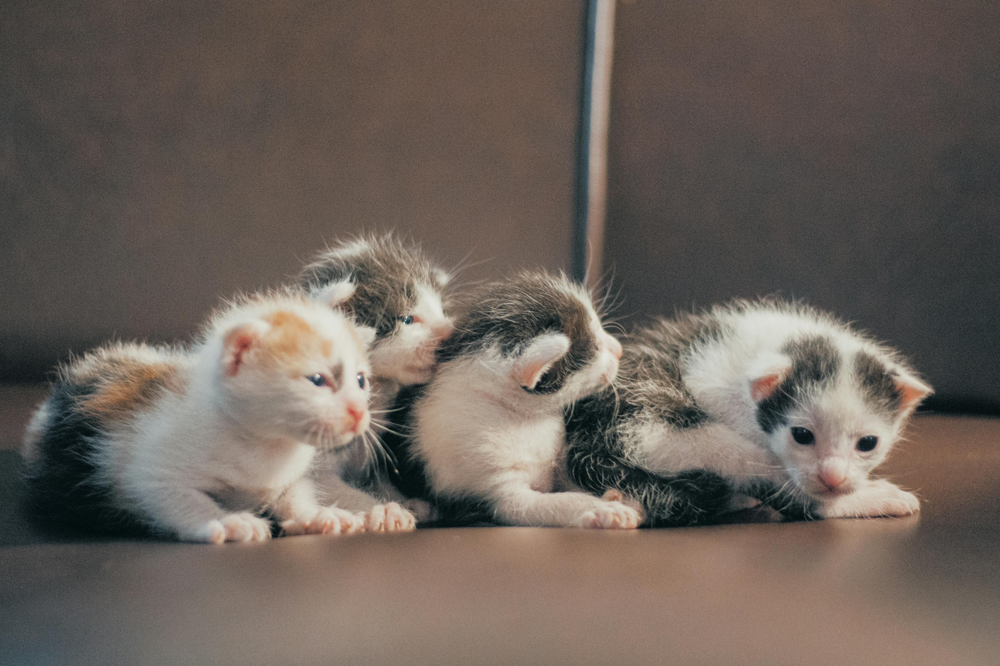

Inicio
Agregar aviso de adopción
Ver listado de adopciones
Estadísticas
Tipo de mascota: Gato
Cantidad: 4
Edad: 1 mes
Fecha publicación: 2025-08-08 10:00
Comuna: Ñuñoa
Sector: Tobalaba
Contacto: Sabrina Salazar
+569 12567839
Email: sabi.sa@outlook.com
Foto/s

×
⬅️ Volver al listado
Volver al inicio